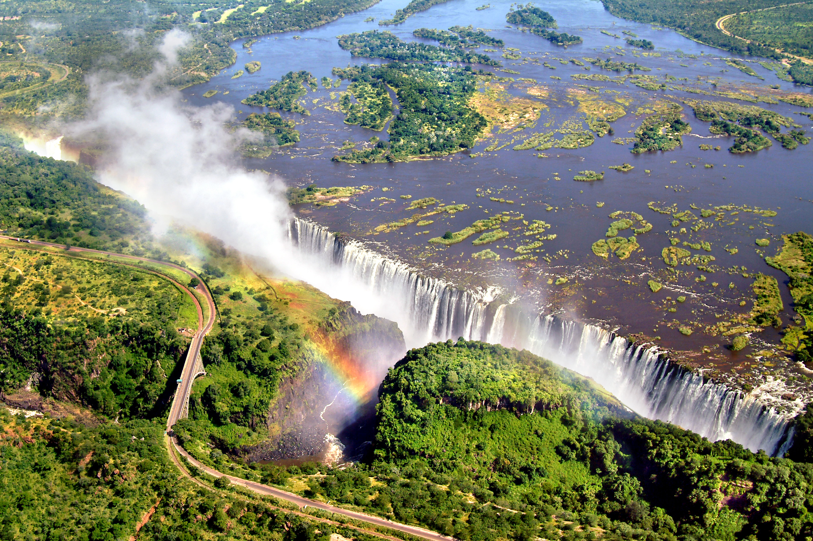
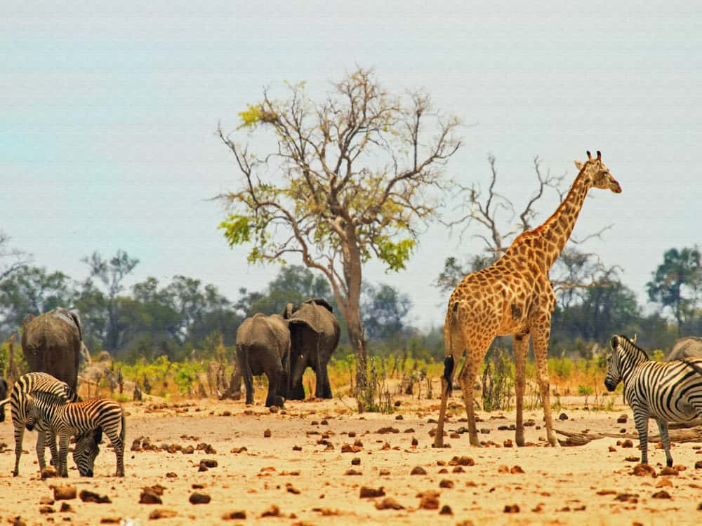
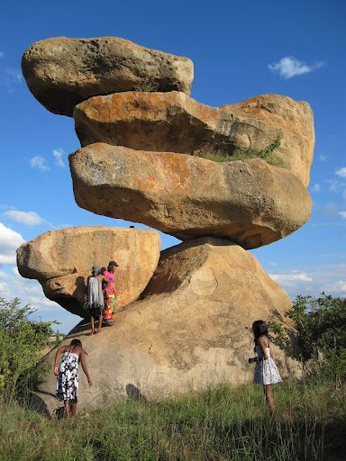

Tourist Sites in Zimbabwe
Victoria Falls

Victoria Falls is one of the Seven Natural Wonders of the World, it is the border between Zambia and Zimbabwe.
At times, more than 500 million cubic meters of water can fall over the 100 meter high drops.
Hwange National Park

The Hwange National Park is the largest park in Zimbabwe occupying roughly 14,650 square kilometers. It is located
in the northwest corner of the country about one hour from the Victoria Falls.
Balancing Rocks

Balancing rocks are naturally occuring rock formations common in Zimbabwe, especially in Matopos National Park.
They gained popularity after being featured on a Zimbabwean banknote.